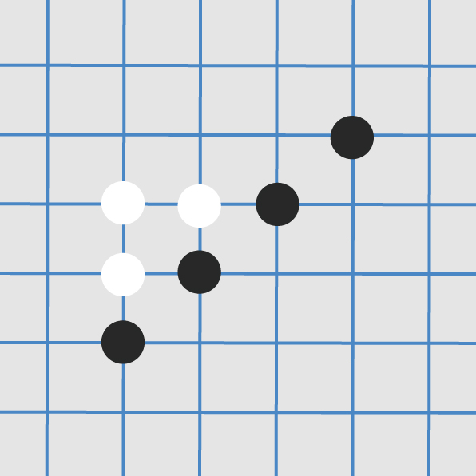
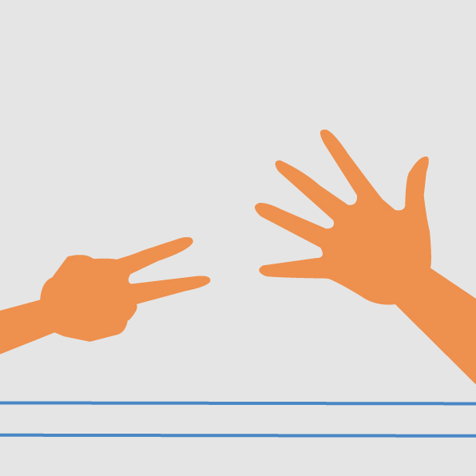
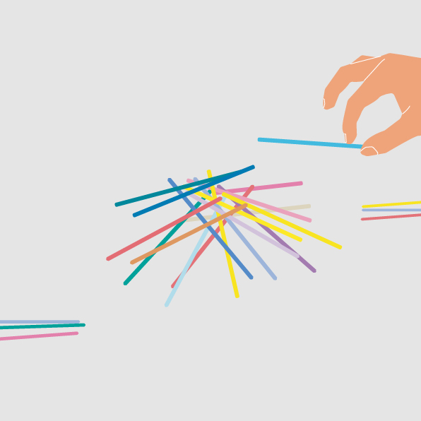
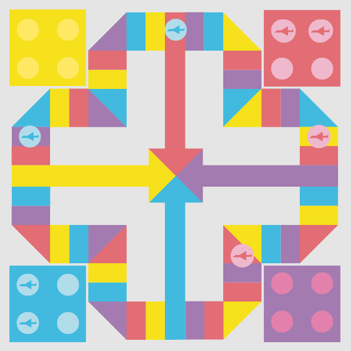
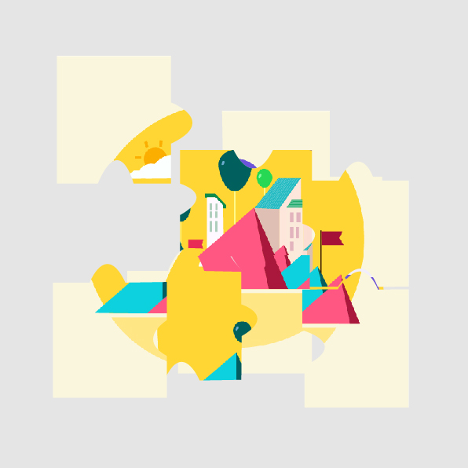

LOGO
目录
眼睛
嘴巴
手脚
大脑
耳朵





七巧板 七巧板是一种古老的中国传统智力游戏，顾名思义，是由七块板组成的。而这七块板可拼成许多图形(1600种以上)，例如：三角形、平行四边形、不规则多边形，玩家也可以把它拼成各种人物、形象、动物、桥、房、塔等等，也可以是一些中、英文字母。七巧板是古代中国劳动人民的发明，其历史至少可以追溯到公元前一世纪，到了明代基本定型。明、清两代在中国民间广泛流传，清陆以湉《冷庐杂识》卷一中写道：近又有七巧图，其式五，其数七，其变化之式多至千余。体物肖形，随手变幻，盖游戏之具，足以排闷破寂，故世俗皆喜为之。在18世纪，七巧板流传到了国外。李约瑟说它是东方最古老的消遣品之一。 七巧板有利于培养提高儿童形状概念、视觉分辨、认智技巧、视觉记忆、手眼协调等，鼓励开放、扩散思考、创新创作。